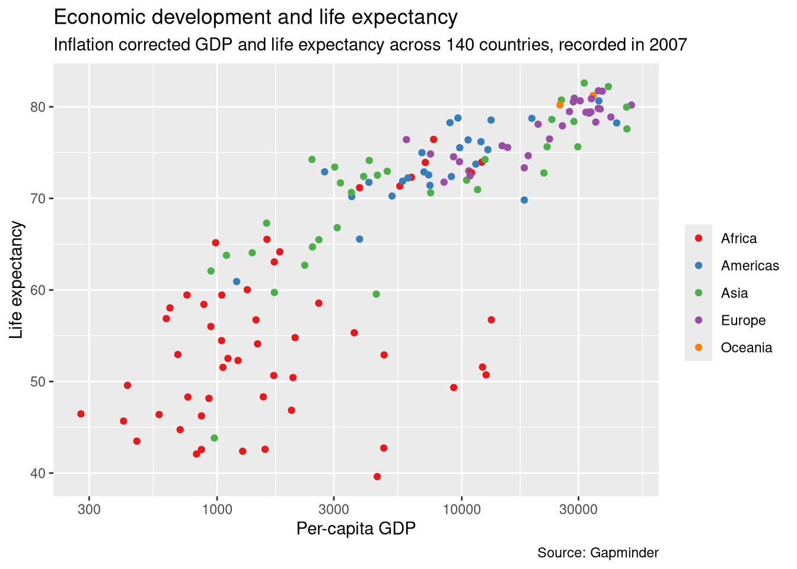

library(gapminder); data(gapminder) # makes the dataset availableQuantitative Methods and Statistics
An applied course using the R programming language
Load dataset and packages
Last session, we learned basic data wrangling using the gapminder dataset. As we should now have a basic idea about its contents and structure, we will use it again to learn how to make informative and nice looking visualizations in R.
We will also load the tidyverse again, which contains the ggplot2 package for visualization:
library(tidyverse)For the sake of making a simpler plot, we will filter the dataset to the year 2007, using the filter() function we learned about last time:
gapminder2007 <- filter(gapminder, year == 2007)The basics of ggplot2
Our first plot
For plotting, we use the ggplot2 package, which is contained in the tidyverse. The fundamental building block for any plot is a call to the ggplot() function, to which we pass the data that we want to plot. On its own, this just creates a blank plot, as we haven’t specified which variables we want to plot and how we want to plot them:
library(ggplot2)
p <- ggplot(data = gapminder2007)
p
To specify what pieces of our data we want to plot, we have to specify an aesthetic mapping from our data variables to the visual elements of our plot (such as positions or colors). This allows us to specify that we want to display variation in GDP along the x-axis and life expectancy along the y-axis:
p <- ggplot(data = gapminder2007,
mapping = aes(x = gdpPercap, y = lifeExp))
pWe can see that our plot now contains axis labels and ticks informed by the range of the data, but there is still no visual representation of the data, because we haven’t specified what kind of plot we want. To specify the how of our visualization, we need to add further instructions to our plotting code.
ggplot2 operates in terms of layers which we can add to our basic plot specification with + to include specific geometric representations of our data (such as points in a scatter plot):
p <- p + geom_point()
pThis plot now contains one point for each country in the dataset, using GDP per capita and life expectancy for the x and y coordinates, respectively. It already tells us a lot about the relationship between per capita GDP and life expectancy:
Life expectancy varies a lot and is generally lower for countries with very low GDP (< 5000 USD), and is consistently high (mostly above 75 years) for richer countries (> 20 000 USD).
At some point (beyond around 25 000 USD or so), more GDP is not really associated with higher life expectancy.
While the plot is already informative, there are many things we can improve, such as including more information from our data by making use of additional visual channels, changing variable scaling, adding better labels, or giving the plot a title.
Exercise
Make a plot that investigates the hypothesis that larger countries are wealthier.
Refining the plot
One first improvement would be to add some more information to our plot, such as the continental grouping of the countries. The obvious choice for the visual channel would be colors: There is only a handful of continents and countries in the same continent should be clustered to a certain degree, making colors easily distinguishable. To color points by continent, we need to add another entry to our mapping:
p <- ggplot(
data = gapminder2007,
mapping = aes(
x = gdpPercap,
y = lifeExp,
color = continent
)
) + geom_point()
pThat’s much better - we can now see a familiar picture of geographically differentiated economic development and its impact on life expectancy. If we want different colors, we can change them by adding another layer to our plot. We could manually add colors with scale_color_manual() but often it is more convenient to pick a predefined scale, like the ones available in the RColorBrewer package:
p <- p + scale_color_brewer(palette = "Set1")
pIf you want to inspect the available scales, call RColorBrewer::display_brewer_all().
Right now, the variation in the left part of the plot is hard to differentiate because the points are close together and there is strong variation in a very narrow GDP range. We can solve this by using a log transformation for GDP, i.e. by plotting the logarithm of GDP (typically base 10 in this kind of scenario) instead of actual GDP. Moving along the x axis by a fixed length will then no longer indicate an additive increase in GDP, but a multiplicative one. Because of this nonlinear nature of the logarithm transform, the points in the left part of the figure will be spread out more while the points to the right will be closer to each other.
We can implement this by simply adding another layer with the scale_x_log10() function to our plot:
p <- p + scale_x_log10()
p
We can now see the variation in the lower GDP range much clearer and we now can see a log-linear trend, i.e., a linear increase in life expectancy with respect to the log of GDP. Some getting used to is required and care needs to be taken when interpreting and creating log scales - they will often yield more readable plots but also have a tendency to confuse people.
For some finishing touches, we should add labels and descriptions to our plot, which we do with the labs() function:
p <- p + labs(
x = "Per-capita GDP",
y = "Life expectancy",
color = "",
title = "Economic development and life expectancy",
subtitle = "Inflation corrected GDP and life expectancy across 140 countries, recorded in 2007",
caption = "Source: Gapminder"
)
pWe can also change the theme of our plot by picking one of the predefined themes and change some stylistic details like the legend position using the theme() function:
p <- p +
theme_minimal() +
theme(legend.position = "bottom")
p
If we want to use the same theme for all the plots in our session, we can activate it as the default theme (ideally at the start of the script):
theme_set(theme_minimal())When we are happy with our plot, it is time to export it to a file so that we can easily include it in a paper, report, or presentation, which we do with the ggsave() function:
ggsave("myplot.png", p, width = 8, height = 8, dpi = 320)Here, width and height are specified in inches, but there is an option to switch to cm. The dpi argument sets the output resolution, which should be reasonably high for inclusion in a document.
The final plot
Here is everything put together and commented, without using an incrementally improved plot variable as before. It is a lot of code, but at this point we should understand what each line does and be able to make further additions or changes.
p <- ggplot(
# Dataset from which to plot variables
data = gapminder2007,
# Mapping variables to visual aspects of the plot
mapping = aes(
x = gdpPercap,
y = lifeExp,
color = continent,
label = country
)
) +
# Visualizing point geometries for observations
geom_point() +
# Log scale for x variable
scale_x_log10() +
# Categorical color palette for continents
scale_color_brewer(palette = "Set1") +
# Labels for axes, titles etc.
labs(
x = "Per-capita GDP",
y = "Life expectancy",
color = "",
title = "Economic development and life expectancy",
subtitle = "Inflation corrected GDP and life expectancy across 140 countries, recorded in 2007",
caption = "Source: Gapminder"
) +
# General design of the plot
theme_minimal() +
# Special design aspects, like legend position
theme(legend.position = "bottom")
# Save the plot to a file (will save the last plot that was generated)
ggsave("myplot.png", p, dpi = 320)Saving 7 x 5 in imageExercise
Use the techniques discussed above to refine the plot investigating the relationship between size and GDP you created in the last exercise.
Composite visualizations
Small multiples with faceting
One powerful visualization technique we have not yet studied is faceting, which is used to create small-multiples plots, i.e. plots which repeat the same visualization structure across multiple panels. This is very useful to, e.g., highlight different trends across subgroups of a dataset.
The easiest way to facet a plot is with the facet_wrap() function, which we can again just add as a layer to a plot specification. Here is an example visualizing per-country GDP trends split by continent:
p2 <- ggplot(
data = gapminder,
mapping = aes(
x = year,
y = gdpPercap,
group = country
)
) +
geom_line(linewidth = 0.5, alpha = 0.3) +
facet_wrap(~continent, scales = "free_y", nrow = 1)
p2The ~ is part of Rs formula notation, which here just indicates that we want to facet by the continent variable. Note also the use of the scales = "free_y" argument, which indicates that each panel should get its own y-axis instead of a shared one. This is necessary because of the big differences in GDP across continents, which would make the variation in some continents hard to see with a shared axis. Finally, note also the group = country in the mapping, which is necessary so that every country gets its own line.
Combining multiple plots with patchwork
If we want to combined multiple plots, we can use the patchwork package, which lets us stack plot objects on top of each other with / or side by side with +. We can also add instructions for the relative widhts / heights of each plot with plot_layout() and add annotations, such as letter tags to each plot. Here is an example combining the two plots we just created:
library(patchwork)
p / p2 +
plot_layout(heights = c(0.6, 0.4)) +
plot_annotation(tag_levels = "A")
Let’s refine this just a bit by giving the second plot the same colors as the first and cleaning up the spacing for the x ticks:
p2_colors <- ggplot(gapminder, aes(year, gdpPercap, group = country, color = continent)) +
geom_line(linewidth = 0.5, alpha = 0.3, show.legend = FALSE) +
facet_wrap(~continent, scales = "free_y", nrow = 1) +
scale_color_brewer(palette = "Set1") +
scale_x_continuous(breaks = seq(1950, 2010, by = 20)) +
labs(x = "", y = "Per-capita GDP")
p / p2_colors +
plot_layout(heights = c(0.6, 0.4)) +
plot_annotation(tag_levels = "A")
Note how we also suppressed the color legend for the lines by setting show.legend = FALSE because we already have a legend for colors from the first plot. The customization possibilities are endless!
Exercises
Use what we have learned so far to visualize the population development by continent.
Make a rough scetch (with pen and paper or a tablet) of the plot that you want to create.
Identify the data requirements of your plot and, if necessary, use the data wrangling tools you have learned about last session to prepare a suitable dataset.
Identify the
geom_*function that you need to make your plot and create a first basic version of your plot.Add labels and a title to your plot.
Pick a theme and make other aesthetic improvements to your plot.
Save your plot to a file.